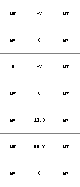
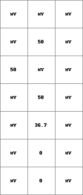
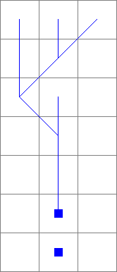
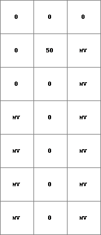

accutraveltimestate, accutraveltimeflux, accutraveltimeremoved
Transports material downstream over a distance dependent on a given velocity.
ResultFlux = accutraveltimeflux(ldd, material, velocity)
ResultState= accutraveltimestate(ldd, material, velocity)
(pcrcalc) ResultFlux, ResultState = accutraveltimeflux, accutraveltimestate(ldd, material, velocity)
For each cell the function computes a travel time which is the time in timesteps it takes for material to cross the cell. This is calculated by dividing the distance from the centre of the cell to the centre of the next downstream cell on the ldd by the velocity which is given in distance per timestep. Then for each cell the material in the cell is transported downstream over the ldd while taking the sum of the travel times of the cells through which the material is routed. The transported material is then deposited in the cell for which the travel time reaches 1. When adding the travel time of the last cell the sum of travel times will usually be higher than exactly 1. This means that the material will not have reached the centre of the destination cell after 1 timestep but will be between the cell and the cell upstream. Depending on the value of the sum, the material will then be split over destination cell and the cell upstream of this according to the formula:
material upstreamcell = (sum-1)/(travel time between cells) * material
material destination cell = material - (material upstreamcell)
The map ResultFlux gives the total amount of material which has flowed through the cell and the map ResultState gives the amount of material which is deposited in the cell.
For velocity the distance per timestep is in unit celllengths if –unitcell is used, or in physical distance if –unittrue is used. The default is –unittrue.
| State1.map | Flux1.map | Ldd.map | Material.map | Velocity.map |
|  |  |  |  |